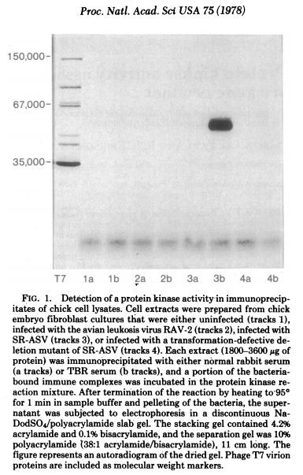
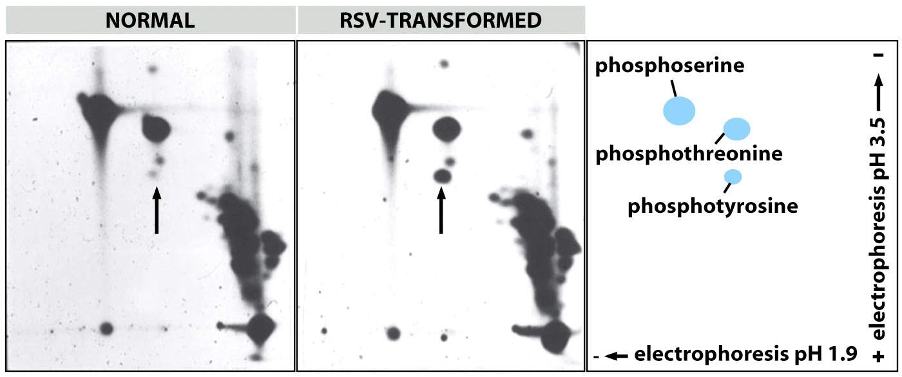
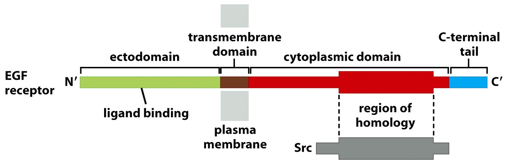
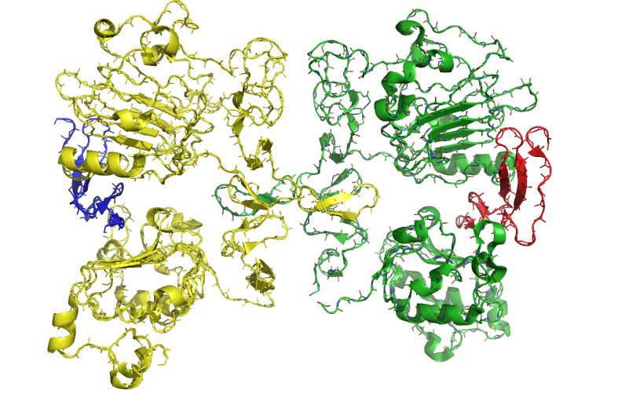
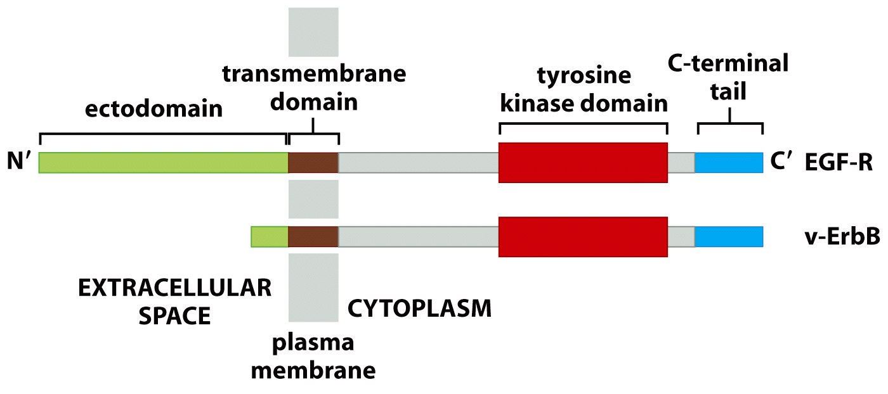
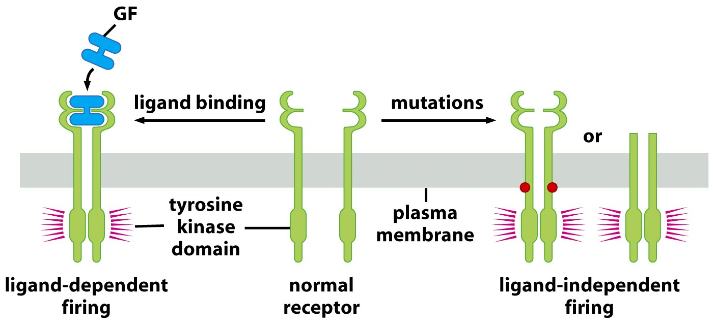
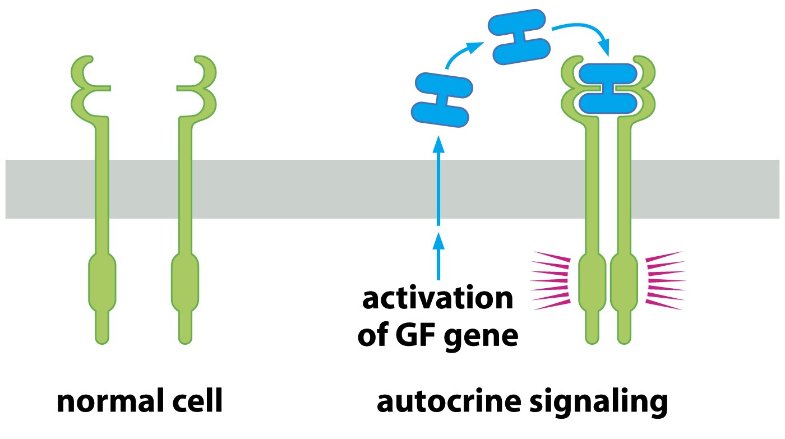
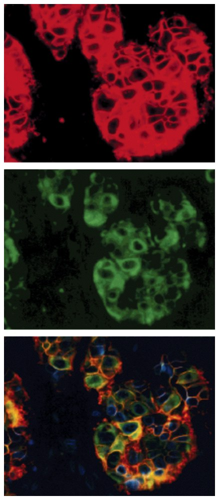

Kasvufaktorid, retseptorid ja vähk
Onkobioloogia
Taavi Päll
vanemteadur, VTAK
Recap
Onkogeen
- Onkogeen on geen mis võib potentsiaalselt vähki tekitada
- Vähkides on onkogeen muteerunud või ekspresseeritud ebanormaalselt kõrgel tasemel.
- Proto-onkogeen on normaalne geen mis võib muutuda onkogeeniks.
Onkogeenide aktivatsioon
- Onkogeenide aktivatsioon on tingitud geneetilistest mutatsioonidest proto-onkogeenides:
- Regulatoorsed (amplifikatsioonid, deletsioonid);
- Struktuursed (mutatsioonid, kromosomaalsed aberratsioonid).
- Sellised mutatsioonid viivad muutusteni proto-onkogeeni ekspressioonis või struktuuris.
Retroviraalsete onkogeenide homoloogid inimese kasvajates
| Viirus | Liik | Onkogeen | Onkovalk | Inimese kasvaja |
|---|---|---|---|---|
| Rousi sarkoom | kana | src | mitte-retseptor TK | käärsoole vähk |
| Abelsoni leukeemia | hiir | abl | mitte-retseptor TK | CML |
| Lindude erütroblastoos | hiir | erbB | retseptor TK | mao-, kopsu- ja rinnavähk |
| McDonough' kassi sarkoom | kass | fms | retseptor TK | AML |
| Hardy-Zuckerman kassi viirus | kass | kit | retseptor TK | GI strooma vähk |
| Hiire sarkoom 3611 | hiir | raf | Ser/Thr kinaas | kusepõie kartsinoom |
| Simian sarcoma | ahv | sis | kasvufaktor (PDGF) | erinevad vähid |
| Harvey' sarkoom | hiir/rott | H-ras | väike G-valk | kusepõie kartsinoom |
| Kirsten'i sarkoom | hiir/rott | K-ras | väike G-valk | erinevad vähid |
| Lindude erütroblastoos E26 | kana | ets | transkriptsioonifaktor | leukeemia |
| Lindude müelotsütoom | kana | myc | transkriptsioonifaktor | erinevad vähid |
| Retikuloendotelioos | kalkun | rel | transkriptsioonifaktor | lümfoom |
Kasvufaktorite-retseptorite paradigma
Hulkraksete organismide (Metazoa) rakkude ellujäämine, kasv ja jagunemine sõltub rakuvälistest signaalidest.
Wnt/β-kateniin signalisatsioon reguleerib rakkude jagunemist krüptis ja tagab soole mukoosa homeostaasi
- Käärsoole epiteel koosneb ühest kihist kolumnaarse epiteeli rakkudest (enterotsüüdid) ja moodustab iseloomulikud sõrmjad sopistised allolevasse sidekoesse (lamina proper).
- Sõrmjate sopististe põhjas asuvad soole krüptid.
- Igas krüptis asub 6 tüvirakku ja Panethi rakke (peensool) või karikrakke (käärsool).
- Rakkude jagunemine toimub ainult krüptis ja diferentseeruvad rakud liiguvad krüptist välja.
- Krüpti ümbritsevad strooma- ja Panethi rakud sekreteerivad erinevaid Wnt signaaliraja ligande.

Türosiin kinaasid signalisatsioonis
Src kinaasse aktiivsuse avastamine

Proc Natl Acad Sci USA 75:1567, 1978. M. S. Collett and R. L. Erikson: Protein kinase activity associated with the avian sarcoma virus src gene product.
- Src oli esimene onkogeen mis avastati.
- Src on selgroogsetel väga konserveerunud valk ja seega mitte eriti immuunogeenne.
- v-Src-i ära tundvad antikehad saadi siiski imetaja troopse RSV-ga indutseeritud kasvajat kandvalt küülikult, 1977. aastal.
- Src kinaasne aktiivsus avastati kui tema immuuno-sadestus reaktsiooni lisati \([\gamma^{32}P]\) ATP-d (kahtlustati, et Src võiks olla kinaas).
- Raporteeriti, et Src fosforüleerib treoniine.
Src fosforüleerib türosiine
- Enne Src-i oli teada, et kinaasid fosforüleerivad valkudes seriine ja treoniine.
- 1979. aastal uuris Tony Hunter polüoomiviiruse middle T antigeeni ja peale Src-i kinaasse aktiivsuse avastamist tegi ta katse, kas ka middle-T võiks olla kinaas - oli!
- Saamaks teada, mis middle-T aminohappeid fosforüleeriti tegi ta õhukese kihi kromatograafiat kasutades fosfoseriini ja -treoniini markeritena.
- Ta kasutas laiskusest oma vana foreesipuhvrit, mille pH oli seistes tõusnud üle algse 1.9.
- Selgus, et seriini ega treoniini ei fosforüleerita, vaid mingit muud aminohapet, mis osutus hiljem türosiiniks (sisaldab hüdroksüülrühma).
- Sama lähenemist ("vanandatud"" puhver lahutab treoniini türosiinist) kasutades testis ta ka Src-i kinaasset spetsiifilisust.

The Biology of Cancer (Garland Science 2007)
Src toimib tsütoplasmaatilise türosiin kinaasina
- Kinaasne domään (SH1 - Src homology 1)
- SH2, fosfotürosüül peptiide siduv domään
- avastati kui Src homoloogia Fujinami sarkoomi viiruse fes onkovalgus (tsütoplasma türosiin kinaas);
- SH3, proliinirikkaid järjestusi siduv domään
- avastati kui CT10 linnu sarkoomiviiruse onkogeen crk (nimetati SH2 domääni avastaja - Hanafusa labori kodulinna, New York'i, auks kui 'crack'). Crk on funktsionaalselt adapter molekul.

Kinaasidel on palju rakulisi substraate

SRCil kirjeldatud rohkem kui 50 valgulist substraati
- Src-i aktivatsioon vabastab SH2 ja SH3 domäänid inhibitsioonist ja võimaldab Src-il läbi nende domäänide seostuda teiste valkudega (Src-i substraadid).
- Enamus Src-i substraate on seotud adhesiooni ja migratsiooniga.
- Transformeeriv aktiivsus (stimuleerib rakkude jagunemist) Src-il ilmselt seotud PI3K-Akt aktivatsiooniga.
- Inimesel siiski Src-i mutatsioone (C-terminaalne trunkatsioon) leitud ainult väiksel osal kaugele arenenud soolekasvajatel. Soolekasvajates ei esine ka c-Src-i amplifikatsioone (TCGA).
v-Src erineb c-Src-ist C-terminaalse deletsiooni jagu

Türosiini kinoom
- Hulkraksete organismide genoomis esindavad türosiin kinaasid ~10–15% kõigist valgu kinaasi geenidest.
- C. elegans-il on 90 TK kokku 454 kinaasist, inimestel 90 TK kokku 525 kinaasi geenist.
- Inimesel on neist 90 türosiin kinaasist 58 RTK (neist neljal puudub kinaasne aktiivsus, nt. ErbB3).
- Enam kui 99% fosfo-aminohapetest on normaalsetes rakkudes fosfotreoniin ja fosfoseriin; fosfotürosiin moodustab 0.05 kuni 0.1% totaalsest fosfo-aminohapetest.
Esimene türosiinkinaas retseptor mis avastati oli EGF retseptor
- EGF omas proliferatsiooni stimuleerivat toimet erinevatele epiteliaalset päritolu rakkudele.
- Kuid see toime esines ainult siis kui EGF seostus rakule, viidates rakupinna retseptori olemasolule.
- EGF retseptor isoleeriti emaka epidermoidsest kasvajast kus see oli tugevalt üle-ekspresseeritud.

The Biology of Cancer (Garland Science 2007)
Türosiinkinaas retseptorite struktuur
- Imetajatel ~20 klassi TKR.
- Tsütoplasmaatiline domään on konserveerunud.
- Suur varieeruvus rakuvälises domäänis.

TK retseptorid inimese kasvajates
| Retseptor | Ligand | Mutatsioon | Vähitüüp |
|---|---|---|---|
| EGFR/ErbB1 | EGF, TGF-a | üle-ekspressioon | mitte väikserakuline kopsuvähk; rinna-, pea-ja kaela-, mao, käärsoole, söögitoru, eesnäärme, kusepõie, neeru, kõhunäärme, munasarja kartsinoomid; glioblastoom |
| EGFR/ErbB1 | ektodomääni deletsioon | glioblastoom, kopsu- ja rinnakartsinoomid | |
| ErbB2/HER2/Neu | NRG, EGF | üle-ekspressioon | 30% rinnakartsinoomidest |
| ErbB3,4 | erinevad | üle-ekspressioon | suuõõne lamerakuline kartsinoom |
| Flt-3 | Flt3 ligand (FL) | tandem duplikatsioon | äge müelogeenne leukeemia |
| Kit | SCF | aminohappe asendused | GI strooma kasvajad |
| Ret | GDNF? | fuusion, punktmutatsioonid | papillaarsed kilpnäärme kartsinoomid, endokriinsed neoplaasiad 2A ja 2B |
| FGFR3 | FGF | üle-ekspressioon, ah asendused | multimüeloom, kusepõie- ja emakakaela kartsinoomid |
RTK aktivatsoon
Klassikaliselt toimub see läbi dimeerse ligandi (kasvufaktori) vahendatud retseptori dimerisatsiooni ja sellele järgneva aktivatsiooni.
Näiteks: KIT, VEGFR.

RTK dimerisatsioon: 4 põhilist moodust

- TrkA: ligand vahendatud dimerisatsioon, retseptorid oma vahel ei interakteeru.
- KIT: ligand vahendatud dimeer, retseptorid seostuvad omavahel otseselt.
- FGFR: mitmed kontaktid reseptori, ligandi ja hepariini vahel.
- EGFR/ErbB perekond: ligandid indutseerivad retseptori dimerisatsiooni, kuid ise ei interakteeru.
EGFR dimeeri rakuvälise domääni ja TGF-a kompleks

Kõik õnnelikud perekonnad on üksteise sarnased, iga õnnetu perekond on isemoodi õnnetu.
Lev Tolstoi
RTK kinaasse domääni aktivatsioon
- Kõigi retseptorite kinaasi domäänid (TKD) koosnevad C-terminaalsest ja N-terminaalsest osast ja aktivatsioonilingust.
- Aktiveeritud olekus on erinevate retseptorite TKD struktuurid sarnased.
- Inaktiivsed domäänid on aga retseptoritel erinevad, peegldades regulatoorset mitmekesisust
- autoinhibitsioon läbi aktivatsioonilingu,
- jukstamembranne autoinhibitsioon,
- C-terminaalne autoinhibitsioon.
- Autoinhibitsioon toimib molekuli siseselt (cis).
- Retseptori aktivatsioonil toimub domääni vabastamine autoinhibitoorsest interaktsioonist.
Autoinhibitsioon läbi aktivatsioonilingu
Insuliini retseptor, FGFR
- Insuliini retseptor: aktivatsioonilingu türosiin-1162 (Y1162) istub aktiivsaidis ja selle (pluss veel 2 Tyr) trans-fosforüleerimine avab aktiivsaidi ja aktiveerib kinaasi.
- FGFR1: aktivatsiooniling blokeerib substraadi sidumise saidi, muidu aktivatsioon sarnane.
Jukstamembranne autoinhibitsioon
KIT, PDGFR, FLT3
- Jukstamembraansed (membraani lähedased) järestused interakteeruvad kinaasse domääni erinevate piirkondadega, kaasa arvatud aktivatsiooniling.
- Retseptori dimeriseerumisel trans-fosforüleeritakse jukstamembraanses osas asuvad türosiinijäägid.
- KIT ja PDGFR mutatsioonid vähkides jukstamembraanses piirkonnas rikuvad autoinhibitoorsed interaktsioonid ja viivad konstitutiivselt aktiivse retseptori tekkeni.
C-terminaalne autoinhibitsioon
Tie2
- Kinaasse domääni C-terminaalne saba blokeerib substraadi sidumise saidi.
- C-terminaalse saba trans-fosforüleerimine vabastab aktiivsaidi.
TKD aktivatsioonil toimib allosteeriline mehhanism
- Autoinhibeeritud TKD nn. "hingavad" ehk inhibitsioon pole absoluutne kuigi tugevas tasakaalus inhibeeritud seisundi poole.
- Selline madal aktiivsus on piisav, et viia läbi esialgne trans-fosforüleerimine kui kaks retseptorit dimeriseeruvad.
Lisaks tekivad retseptorite dimerisatsioonil allosteerilised efektid mis mõjutavad aktiivsaiti.
EGFR/ErbB perekonna retseptorite aktivatsioonil trans-fosforüleerimist ei toimu.
- Dimerisatsioonil, ühe retseptori C-domään ("Aktivaator") seostub teise retseptori N-domääniga ("Ressiiver") ning põhustab allosteerilise mehhanismi kaudu Ressiiver kinaasi konformatsioonimuutuse, mis vabastab monomeeris esineva cis-autoinhibitsiooni.
Väikserakulises kopsuvähis esinevad onkogeensed mutatsioonid mis vabastavad EGFR-i cis-autoinhibitsioonist ja põhustavad ligand-sõltumatu aktivatsiooni.
Allosteric, of or involving a change in the shape and activity of an enzyme that results from molecular binding with a regulatory substance at a site other than the enzymatically active one.
Muteerunud kasvufaktori retseptor võib toimida onkogeenina
- 1984. aastal avastati, et EGF retseptori (erbB) valgujärestus on homoloogne linnu erütroblastoosi viiruse onkogeeniga v-ErbB.

The Biology of Cancer (Garland Science 2007)
N-terminaalne deletsioon põhustab v-ErbB ligand sõltumatu konstitutiivse aktivatsiooni.
Mutatsioonid kasvufaktorite retseptorites põhjustavad ligand-sõltumatut aktivatsiooni

The Biology of Cancer (Garland Science 2007)
RTK mutatsioonid mao adenokartsinoomides

doi:10.1038/nature13480
- Enamus muutusi RTK-s on seotud koopiaarvu muutustega.
- Lisaks ka sage VEGFA amplifikatsioon.
Kasvajarakud sekreteerivad autokriinseid kasvufaktoreid

Kõrval: Rinnanäärme kartsinoomi rakud ekspresseerivad EGF retseptorit (punane) ja selle ligandi \(TGF-\alpha\) (roheline).
The Biology of Cancer (Garland Science 2007)

IGF2 amplifikatsioon käärsoole kasvajates
- IGF2 geeni sisaldav genoomipiirkond 11p15.5 on amplifitseerunud ~7% CRC-s, põhjustades IGF2 üle-ekspressiooni neis vähkides.
- Lisaks on IGF2 üle ekspresseeritud ka muudel põhjustel.
- IGF2 või IRS2 (Insulin receptor substrate 2-valk mis vahendab insuliini retseptori signaliseerimist PI3K ratta) üleekspressioon ja PI3K raja mutatsioonid on üksteist välistavad.

doi:10.1038/nature11252
Lisaks RTK-le on veel palju erinevaid kasvufaktorite retseptoreid-radu
- Jak perekond (just another kinase; Janus kinase), seostuvad tsütokiini ja kasvufaktorite retseptoritele millel endal puudub kinaasne aktiivsus (kasvuhormooni retseptor, EPO-R, IFN-R).
- TGF-beta retseptorid (NB! seriin-treoniin kinaasse aktiivsusega), aktivatsioon üle tüüp-I (vajab aktivatsiooni) ja tüüp-II (konstitutiivselt aktiivne ser/thr kinaas) retseptorite heterodimeriseerumise.
- Notch retseptorid, parakriinse ligandi sidumisel toimub reteptori proteolüütiline aktivatsioon ja Notch ICD (intracellular domain) transporditakse tuuma, kus toimib TF-na.
- Hedgehog signaalirada, Patched-Smoothened-Gli, basaalrakuline kartsinoom.
- Wnt signalisatsoon, Frizzled retseptor, toimib beta-kateniini stabiilsuse ja transkriptsioonilise aktiivsuse kontrollina. Wnt rada on oluliselt häiritud soolekasvajates.
Wnt ja TGF-beta radade mutatsioonid käärsoole kasvajates
- Wnt raja retseptor Frizzled (FZD10) ~30% juhtudest üle-ekspresseeritud.
- TGF-beta ja Aktiviini retseptorid muteeritud vastavalt 60% ja 80% juhtudest.
doi:10.1038/nature11252

GPCR

doi:10.1038/nrm2299
- G-valgulised retseptorid (genoomis 800 geeni).
- Mitogeenid nagu trombiin, lüsofosfatiid hape (LPA), gastrin-releasing peptide (GRP), endoteliin ja prostaglandiinid stimuleerivad rakkude jagunemist läbi oma spetsiifiliste GPCR-ide.
- Munasarja vähi astsiit sisaldab palju LPA-d ja stimuleerib rakkude jagunemist ja kemoresistentsust.
- G valgu kompleks (\(\alpha\), \(\beta\) ja \(\gamma\) subühikud) aktiveerub seostudes retseptorile